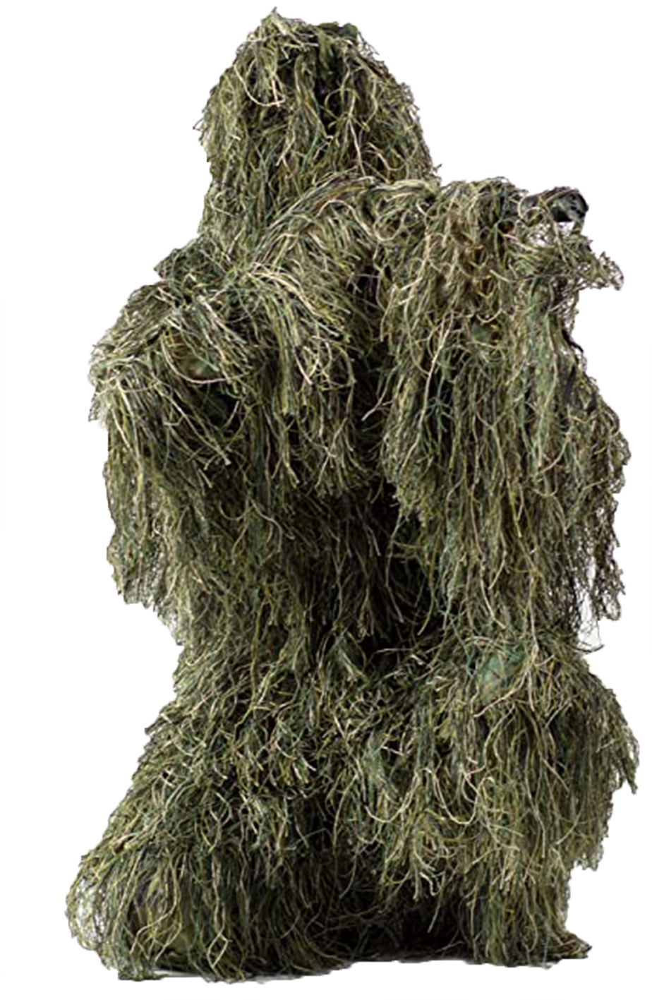

Barely Recognisable
Go find the most convincing disguise possible, it could be dressing up as another person or trying to create your own ghillie suit. Or if you have your own ghillie suit then looks like ypu got a leg up, but also I am going to try and steal it.
Example:

CAUSE I WOULD 500 MILES AND I WOULD WALK 500 MORE JUST TO BE THE MAN WHO WALKED 1000 MILES TO FALL DOWN AT YOUR DOOR LA LA LA LA
-The sun is screaming and my mum is having coffee yet i have forgotten what my bed feels like.